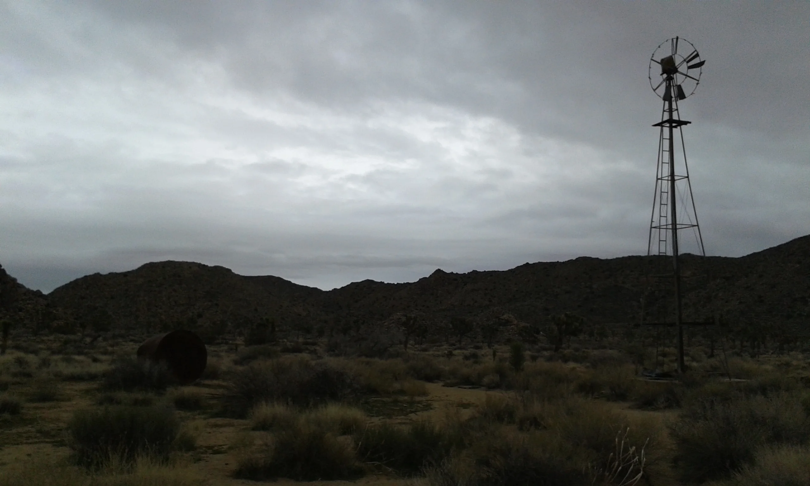

The Californian road trip was my first time in the States. Despite all the clichés that a road trip in America can represent, I think I had one of the most mystical, intense and tiring experiences of my life as a traveller. I am used to road tripping. I was been doing it quite extensively during my stay in Australia in 2013 with different people on different cars but never by myself. Entering the US after an almost 12 hours flight was not easy at all. I had to go through some extra checks once I landed and taking the public transportation towards East Hollywood, the area where I was staying, was probably not the best choice at all. I think overall the bus trip lasted a bit over one hour and that was one of the time where I felt most unsafe while travelling. I have got to see the poverty, the misery and the frustration that affect part of the country with my own eyes despite of being in one of the most richest states, but for some reason I found most of the people I met very social and that was very reassuring.
The first days I was hanging out in LA and fighting with the jet lag but as soon as I have got to sit on the car I rented, the real journey has started. After some hours on the car, driving somewhere east outside LA without even know exactly where (I think I was around the Coachella valley), I found myself without food, battery on my phone and petrol and I started to panic, mostly because it was getting dark. I was travelling with a paper map and I had some coordinates pinned on my phone, which corresponded to the places where tecnically I was allowed to sleep in my car, although in California it is mostly fordibben everywhere.
Sleeping alone in the middle of the desert was magical. In Europe we don't have a clear view of what it does mean to be thrown in the middle of nowhere, far from everyone, where everything I had in front of me was purely rocks, sand and a magnificent starry sky. I have been through many deserts and I am going to name them all just to have them in mind once again: Joshua Tree, Mojave, Death Valley and the national park Yosemite.
During my trip I was mostly entertained by the radio but I have also brought some music with me and in particular I want to mention the album "No Problem" of Chet Baker featuring Duke Jordan, because for some reason that album was the beginning of my love relation with jazz music, that still lasts nowadays.
San Francisco was halfway through my experience and sleeping facing the Golden Gate and being woken up by an enchanting sunrise was definitely the highlight. Marouane came to pick me up that day late morning and took me around with his car. We stopped for lunch at a burger place and I felt amazed to notice how time sometimes does not affect human relations when people are smart enough to remark that to some extent "we are who we meet, so why lose contact?"
I started to drive down the Highway 1 towards Los Angeles where my flight was waiting for me the week after and I noticed that from that moment, my journey would have been harder. More inhabited places also means more control and more police. I had to struggle to find a shelter (=parking) for the night and in some cases I found myself driving around at night without exaclt knowing where to stop. The Big Sur is an excellent landscape though. In particular I enjoy visiting Henry Miller house, today turned into a library.
What to read on this unique trip? Sadly I never had the chance to study american literature properly during my studies, therefore I opted for the most classic of all the american road-trip books, written from the great Jack Kerouac in 1957, the manifesto of the beat generation, a book that personally never made my feel alone also in the hardest moment and it provided me with a unique Bop soundtrack.
**Foxygen, Livin'a Lie//Hole, Malibu//Chet Baker, No Problem**